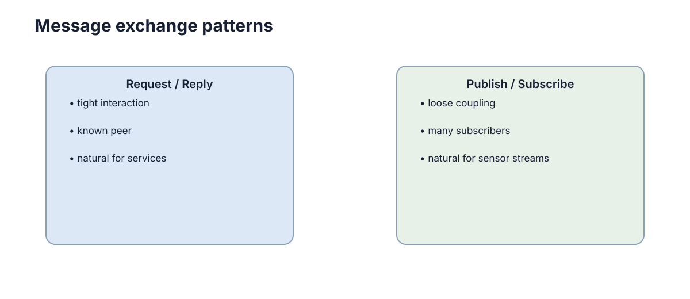

Networks & Message Passing
分布式系统的第一事实是：另一个节点不在本进程里，所有协作都必须经过网络。 网络会延迟、丢包、重复、断开，因此“调用远端函数”和“调用本地函数”从根本上不是同一件事。
很多初学者把网络当成一根透明的管道：既然 TCP 保证可靠，那么“A 调用 B”就应该等价于“在本进程里调用一个函数”。这个假设在局域网内、负载很轻、对端健康时几乎总成立，于是它被悄悄写进了系统设计。等到丢包率升高、对端进程重启、网络被切分时，所有建立在这个假设上的逻辑会同时失效。分布式系统的大部分复杂度，来自“必须承认远端不可靠，却仍然要交付确定的行为”。
本章的线索是自下而上的：先看清传输层到底给了什么语义，再看应用层必须补上什么；接着讨论消息新鲜度、故障退化与交付保证；最后把直觉收敛成可选项和契约演进规则。

TCP 和 UDP 提供的是不同传输语义
TCP 提供可靠、有序的字节流。它会重传丢失数据，但不替应用定义消息边界：连续两次 send() 在接收端可能被一次 recv() 读到，也可能被拆开。
UDP 保留数据报边界、延迟更直接，但可能丢包、乱序或重复。它适合对最新数据更敏感、允许偶尔丢失旧包的场景，例如部分高频状态流。
因此协议选择本质是可靠性、时延和数据语义之间的权衡。
“可靠”这个词比它听起来更窄。TCP 保证的是：只要连接还活着，字节最终会按序到达。它不保证数据在你需要的时候到达，也不保证对端进程真的处理了它。一个有 30 秒重传退避的 TCP 连接，可能在你以为早已超时之后，才把一段陈旧指令送达——此时“可靠”反而变成了危险。
还有一种常见误解，是认为 TCP 在“慢”和“快”之间只是速度差别。实际上丢包对 TCP 的影响是非线性的：丢包会触发拥塞窗口收缩，吞吐骤降，且多个流共享同一瓶颈链路时会产生队头阻塞（head-of-line blocking）——一个流卡住会拖慢同一连接上排在后面的所有消息。延迟分布因此不是对称的，尾部延迟（p99）往往比中位数高一到两个数量级，而控制系统感受到的正是尾部。
UDP 的问题恰好相反：它把顺序和完整性全部交还给应用。你要么接受偶尔的缺失，要么自己实现序号、确认和重传。选择 UDP 通常意味着你已经确认了“旧数据比缺失数据更糟”——例如一个 100 Hz 的位姿流，第 47 帧没到没关系，但第 46 帧拖到第 60 帧之后才到就是纯粹的负价值。
TCP/UDP 的最小接口差异
import socket
tcp = socket.create_connection((host, port), timeout=1.0)
tcp.sendall(frame_message(payload)) # 应用层负责消息边界
udp = socket.socket(socket.AF_INET, socket.SOCK_DGRAM)
udp.sendto(payload, (host, port)) # 一次发送对应一个数据报
这只是发送侧骨架。生产系统还要定义长度前缀或帧格式、超时、重连、包大小和身份验证。
注意上面这十几行里没有一个错误分支：没有处理 ConnectionResetError、没有处理半包、没有处理超时后的重试语义，也没有处理 UDP 的数据报超过链路 MTU 时被 IP 层分片、进而在其中一片丢失时整包作废的情况。这些恰恰是分布式代码里最容易出错的部分。
还有一个常被忽略的细节：消息边界与应用语义并不总是对齐的。 假如发送方把一条消息拆成三个 send() 调用，接收方可能读到 1.5 条消息；反之若发送方连发一千条小消息，接收方可能一次读到几十条。这就是“粘包与半包”问题的来源。长度前缀把切分责任从“字节何时到达”转移到“协议约定的字段”，从而让消息边界与传输分片彻底解耦。
延迟敏感的场景还常遇到 TCP 的两个默认行为需要调整：Nagle 算法会把小包攒起来一起发，从而牺牲延迟换带宽效率；延迟确认（delayed ACK）最多等待约 40 ms 才回复。二者叠加，可能在一条几乎没有负载的链路上产生几十毫秒的无谓延迟。对控制回路而言，这个量级足以让整条时间预算失效，所以实时系统常显式关闭它们，并接受随之而来的小包开销。
UDP 侧则要关心 MTU。典型以太网 MTU 为 1500 字节，扣除 IP 与 UDP 头后可用载荷约 1472 字节。超过这个值的数据报会被 IP 层分片，而分片的致命之处在于：只要其中任意一片丢失，整个数据报就不可用，但丢包率是按片计的。一个 8 KB 的消息被分成 6 片，在 1% 片丢包率下整包失败率接近 6%。因此高可靠场景通常把应用层消息限制在 MTU 之内，或自行在应用层分片并做整包重传。
应用层仍然必须定义什么是一条消息
无论 TCP 还是 UDP，系统都需要定义序列化格式、字段、版本和错误行为。一个任务消息至少要说明任务 ID、发送者、时间戳和状态，而不能只发送一个模糊字符串。
JSON 便于调试，Protobuf/IDL 更适合严格接口和高效传输。格式本身不是重点，双方对字段语义有共同契约才是重点。
这里有一个容易被忽略的区分：帧（frame） 是传输层的切分单位，消息（message） 是语义单位，两者不必一一对应。长度前缀方案让接收方先读 4 字节长度、再读载荷，从而把字节流重新切回消息。这个看似琐碎的约定，是把“可靠字节流”提升为“可靠消息流”的唯一途径。
一个完整的消息契约至少要说清五件事：字段名的含义、单位（米还是毫米、弧度还是度）、坐标系（谁在谁下面）、时间戳的基准（采样时刻还是发送时刻）、以及字段缺失或非法时的行为。单位错误的代价在机器人项目中格外高——把米写成毫米，不会让系统崩溃，只会让机器人撞上去。
更隐蔽的一类是语义漂移：字段名没变、类型没变、单位也没变，但含义变了。例如 status 原本表示“任务是否被接受”，后来被改成“任务是否完成”，两个版本的代码都能正常运行，只有把两边的日志放在一起看才会发现判断依据不同。这类问题的排查成本极高，唯一有效的防线是在契约里为字段写清楚语义，并在改动时改名。
序列化格式的选择通常按以下标准判断：
- 调试友好性：JSON 可直接阅读，适合早期迭代与人机交互接口。
- 模式严格性：Protobuf/IDL 由 schema 约束字段与类型，能在编译期发现不兼容。
- 传输效率：二进制格式体积小、解析快，对高频流或资源受限平台更合适。
- 演进支持：能否安全地增删字段、是否要求字段编号稳定，决定长期维护成本。
对机器人系统而言，真正的高频流（点云、图像、IMU）通常用二进制格式，而配置与调试接口用 JSON。同一系统内混用多种格式是常态，前提是每种格式的契约边界都被显式写明。
| 契约要素 | 说明 | 缺失时的典型后果 |
|---|---|---|
| 字段语义 | 名字背后到底表示什么 | 双方对同一字段理解不同，逻辑静默错误 |
| 单位与坐标系 | m/mm、deg/rad、parent frame | 数量级错误，控制发散 |
| 时间语义 | 采样时刻 / 发送时刻 / 接收时刻 | 融合错误，时间对齐失败 |
| 必填与可选 | 哪些字段允许缺失 | 解析异常或默认值悄悄污染状态 |
| 非法值行为 | 越界、NaN、超时如何响应 | 未定义行为，难以复现 |
Request/Response 与 Publish/Subscribe
查询参数、请求一次规划结果通常适合 request/response：调用方明确等待一个结果。
里程计、传感器和状态事件则更适合 publish/subscribe：发布者只负责把数据发到 Topic，不需要知道有多少订阅者。这样可以降低模块耦合。
subscribers = {"robot.pose": [localizer, recorder]}
def publish(topic, message):
for consume in subscribers.get(topic, []):
consume(message)
这个内存示例只说明解耦关系；跨进程系统还需要 broker 或 DDS、序列化、背压和交付语义。
两种风格最本质的差别在于失败的含义。request/response 里，“没有响应”是一个明确的、需要被调用方处理的信号；调用方因此天然拥有超时、重试和降级的落点。publish/subscribe 里，发布者根本不知道有没有人在听，一条消息可以无声无息地没有任何消费者——系统不会报错，只是行为悄悄退化。Pub/Sub 把正确性的责任从传输层转移到了订阅方。
Pub/Sub 还引入了两个额外变量：一是订阅者数量未知，一条消息的扇出可能从 1 变成 50，带宽与 CPU 成本随之变化；二是匹配是动态的，订阅者可能在任意时刻加入或退出，因此“消息是否被处理”不是一个稳定事实。相对地，request/response 的调用关系是显式的，便于做超时与限流。
| 维度 | Request/Response | Publish/Subscribe |
|---|---|---|
| 耦合方向 | 调用方知道被调用方 | 发布方不知道订阅方 |
| 失败可见性 | 明确（超时/错误码） | 隐式（无人订阅也不报错） |
| 扇出 | 通常 1:1 | 1:N，数量动态 |
| 适合数据 | 查询、一次性决策 | 持续状态流、事件广播 |
| 主要风险 | 阻塞与级联超时 | 静默丢消息、背压堆积 |
| 背压手段 | 直接拒绝或排队 | QoS/队列深度/丢弃策略 |
工程上常见的是混合：控制与查询走 request/response 以保证明确失败；状态流走 Pub/Sub 以保证解耦和新鲜度。强行统一成一种，往往会在某一边付出不必要的复杂度。
背压（backpressure）是 Pub/Sub 最容易缺失的环节。发布者通常不等订阅者，订阅者如果处理不过来，消息会堆积在队列或中间件缓冲里。堆积本身不会立刻报错，但会同时抬高延迟和内存占用，最终以“系统突然变慢或被杀掉”的形式暴露。没有背压机制的发布订阅链路，其故障模式是雪崩而不是拒绝。 常见应对有三种：限制队列深度并显式丢弃旧消息（适用于状态流）、设置 QoS 让中间件拒绝或等待（适用于可靠事件）、以及把高频数据改为“拉取式”以让消费者控制节奏。
消息新鲜度
机器人位置即使可靠送达，如果延迟两秒才到，可能已经没有使用价值。因此很多实时系统更关心新鲜度而不是“每一条都不能丢”。
消息里常需要时间戳、序列号或 TTL。接收方应能丢弃过期数据，而不是把“收到”误认为“可用”。
可以把新鲜度形式化为接收时刻与采样时刻之差：
当 \(D_{\text{eff}}\) 超过该数据的有效寿命 \(\tau\) 时，这条数据对决策的价值已经归零，无论它多么“可靠”。由此得到一个反直觉但重要的结论：在实时链路里，延迟与丢包是可以互相折算的——一条迟到 500 ms 的消息，等价于一条丢失的消息。
新鲜度策略通常有以下几种，它们对系统的要求依次递增：
| 策略 | 机制 | 好处 | 代价 |
|---|---|---|---|
| TTL 丢弃 | 消息带过期时间，超时即丢 | 实现简单，防止使用陈旧值 | 受众需接受状态瞬时空缺 |
| 序列号覆盖 | 只接受更大序号 | 天然抵抗乱序与重复 | 无法判断内容是否真的更新 |
| 采样时间戳比对 | 按采样时刻去重与排序 | 融合时对齐最准确 | 依赖各节点时钟可比较 |
| 会话/心跳过期 | 超时未更新即判定源离线 | 能识别“源消失”而非“数据陈旧” | 超时参数需按链路特性调 |
最后一种尤其重要：消息“过期”和消息“断流”是两件不同的事。前者说明源还在工作、只是数据旧；后者说明源可能已经崩溃。系统对这两种情况的响应必须不同——前者可以继续用上一帧并逐步降低置信度，后者则应当触发降级或安全状态。
更进一步的区分是“源变慢”与“源停止”：前者表现为间隔变大但仍在更新，后者表现为完全静默。两者可用同一套超时参数处理，但响应策略不同——变慢通常只需降低该数据的权重，静默则可能需要触发切换。把两者都简单处理成“超时即停用”，会让系统在轻微拥塞下频繁抖动。
衡量新鲜度时常用的几个量：
- 端到端延迟：从采样到可用的总耗时，含协议栈与排队开销。
- 抖动：延迟的波动范围，决定融合时是否需要额外缓冲。
- 年龄（age）：接收时刻与采样时刻之差，即 \(D_{\text{eff}}\)。
- 有效可用率：在年龄阈值内被真正使用的消息比例，而不是字节到达率。
注意最后一项与“传输成功率”不是一回事：一个传输成功率 99.9% 但延迟抖动极大的链路，其有效可用率可能低得多，因为大量消息送达时已经过期。
网络故障后系统要有明确退化模式
链路断开时，系统可以缓存、重试、切换本地控制或进入安全状态，但不能无限阻塞等待远端恢复。尤其机器人控制链中，失联应该触发安全减速或本地自治，而不是继续执行旧指令。
分布式设计最重要的习惯之一是：任何远程调用都可能失败。
“失败”本身并不总是清晰的。分布式系统里存在一个著名的中间态：调用超时意味着你不知道远端是没收到、收到了还在处理、还是处理完了只把响应丢了。这个不确定性无法通过增加重试消除，只能通过幂等与和解（reconciliation）来应对。把超时当作“一定没执行”是最危险的错误假设之一。
因此每一类交互都应当事先写明退化模式，而不是在故障发生时临时决定：
| 组件 | 断链时的行为 | 恢复时的行为 | 禁止行为 |
|---|---|---|---|
| 状态订阅（位姿、里程计） | 保留最后值并标记时间戳，超时后置信度衰减 | 用新序列号直接覆盖 | 继续把旧值当当前真值使用 |
| 控制指令 | 切换到本地安全策略（限速/停车） | 需要显式重新握手与状态校验 | 盲目重放积压指令 |
| 任务分配 | 冻结归属，不再接受新分配 | 依据版本号或租约重新协商 | 两个节点各自认为任务属于自己 |
| 日志与遥测 | 本地缓冲，允许丢弃 | 批量补传，允许乱序 | 阻塞主控制回路等待补传成功 |
退化模式的验收标准很朴素：拔掉网线，系统应该仍然安全，而不是仍然“正常工作”。 一个从未测试过断链的系统，其退化行为是未知的。
还有一点容易被忽略：退化模式必须是可恢复的。从安全状态回到正常协作需要明确的重新握手条件——例如状态重新可用、序列号连续、版本校验通过。若恢复条件只是“网络又能通了”，那么系统很可能在还没对齐状态时就重新开始执行，把一次短暂断链变成一次状态错乱。
验证退化行为不必等真实故障，常用的注入手段有：
- 直接拔网线或禁用网卡，观察控制链的响应延迟与最终安全性。
- 用
tc netem注入延迟、丢包、乱序与重复，检验超时与去重逻辑。 - 暂停对端进程（例如发
SIGSTOP），制造“活着但不响应”这一最难情形。 - 让网络恢复但不重启对端，检验重新握手与状态对齐是否完整。
- 触发对端重启，检验本地是否会把陈旧指令重放给一个全新进程。
只测过“正常网络”的系统，其故障行为是未定义行为。 这些注入手段的价值在于把未知变成已知，并让退化路径成为日常被测试的代码路径。
交付保证属于端到端协议
TCP 的可靠字节流并不等于业务操作只执行一次。连接断开时，客户端可能不知道请求是否已在服务端完成。端到端语义仍需依靠请求 ID、幂等处理和业务确认建立，不能只依赖传输层。
这一层的经典结论是：可靠性必须由端到端协议自己负责。中间层（TCP、broker、网关）能提供的最好东西是“至少一次”或“至多一次”，而任何一个中间层都无法单独构造出“恰好一次”的业务效果，因为它无法知道最上层应用是否已经完成副作用。
去重寄存器（dedup table）是把“至少一次”提升为业务级“恰好一次”的标准做法：
def handle(request_id, payload, seen):
if request_id in seen:
return seen[request_id] # 重放：返回上次结果，而不是重做
result = apply_once(payload)
seen[request_id] = result
return result
代价是这张表必须足够大、足够持久：内存表在重启后失效，持久表则引入写放大与清理策略。“恰好一次”从来不是免费的，它总在某个地方退化成去重。
这也解释了为什么很多系统在文档里写“恰好一次”，实际实现却是“至少一次 + 去重 + 幂等”。区分这两种说法很有必要，因为它决定了你在什么时候必须操心重复：如果接口自称恰好一次但内部靠去重，那么去重表的生命周期就是系统的真实边界，重启后的一段窗口内仍可能重复。
把“至少一次”做成“业务上恰好一次”，通常靠下面几种手段中的一种或几种组合：
- 请求 ID + 去重表：最通用，适用于任意副作用，代价是需要持久化状态。
- 幂等操作：把操作设计成重复施加结果不变，例如“设置为 X”而不是“增加 X”。
- 条件写：用版本号或前置条件保证操作只在预期状态下生效，例如“仅当状态为 PENDING 时转为 DONE”。
- 业务确认与对账：允许重复发生，但由下游在结算时消除重复影响。
- 自然键唯一约束：由存储层拒绝重复插入，把去重下沉到数据库。
这几种手段的成本与适用范围不同：越靠前越通用但越重，越靠后越轻但越依赖具体语义。选哪种，取决于这类操作重复一次会造成多大后果。
传输层选择的定量依据
选择传输方式时，定性描述（“快”“可靠”）往往不足以支撑决策，需要落到可测量的量上：可靠性、延迟分布、吞吐、丢包表现与典型场景。
| 传输方式 | 可靠性 | 延迟特征 | 吞吐 | 丢包表现 | 典型场景 |
|---|---|---|---|---|---|
| TCP | 可靠、有序字节流 | 握手与重传抬高尾部延迟 | 高，受拥塞控制 | 表现为阻塞变慢，不表现为缺失 | 参数服务、任务下发、日志回传 |
| UDP | 不可靠、无排序 | 无握手，延迟最低且接近链路 | 中高，无拥塞公平性 | 直接丢包、乱序、重复 | 高频状态流、视频帧、心跳 |
| 共享内存 | 取决于进程内同步 | 纳秒级 | 极高 | 无丢包，但有撕裂与竞态 | 同机多进程融合、仿真循环 |
| 串口 | 帧尾校验，无端到端保证 | 毫秒级且抖动小 | 极低（kbps 到 Mbps） | 帧错误、缓冲溢出 | 嵌入式 MCU、安全链路、调试口 |
读表的正确方式是先固定约束，再看候选。若数据必须完整且不介意尾部延迟，选 TCP；若只有“最新一帧”有价值，选 UDP；若在同一台机器上，共享内存的延迟优势通常比任何网络方案都大一个数量级，但要自己处理同步；若面对的是硬件与确定性，串口的低抖动反而比高吞吐更重要。
还要记住：这些量不是独立变量。降低延迟的常见手段（减小缓冲、关闭 Nagle）会增加丢包敏感性；提高可靠性的手段（重传、确认）会抬高延迟。工程选择永远是在延迟、可靠性与成本构成的曲面上取点，而不是挑一个“最好”的选项。
另一个实用判据是把延迟拆成预算再分配。一个 20 ms 控制周期不可能容纳 10 ms 的网络往返、5 ms 的序列化和 8 ms 的计算。把每段的实测值与抖动（而不只是均值）写进设计文档，往往能立刻看出哪一段在拖后腿，以及哪一段必须换传输方式。
| 需求 | 更合适的传输 | 理由 |
|---|---|---|
| 每条数据都不能丢，且可容忍延迟 | TCP | 重传成本可接受，完整性优先 |
| 旧数据无价值，只关心最新 | UDP | 及时性优先，缺失可由下一次更新弥补 |
| 需要微秒级同步的多进程 | 共享内存 | 绕开协议栈，但需自行同步 |
| 需要极低抖动与确定性 | 串口/现场总线 | 抖动小，吞吐换确定性 |
交付语义与实现代价
一旦承认消息可能丢失、重复和乱序，就必须显式选择交付语义。三种语义的差别不在“努力程度”，而在可证明的失败模式。
| 交付语义 | 机制 | 代价 | 失败模式 | 适用场景 |
|---|---|---|---|---|
| 至多一次 | 发即忘，不重传 | 最低 | 消息可能永久丢失 | 高频遥测、可丢的状态流 |
| 至少一次 | 确认 + 重传 | 需要缓冲与确认开销 | 重复执行副作用 | 事件通知、日志、命令下发 |
| 恰好一次 | 序号 + 去重表 + 幂等 | 状态持久化与清理成本 | 状态膨胀、重启丢失幂等记录 | 库存扣减、任务归属、支付 |
核心洞见是：“恰好一次”在物理层并不存在，它总是“至少一次 + 去重”的组合。 传输层能做到的极限是“要么没到，要么到一次以上”，剩下的“多余次数”必须由应用侧用请求 ID 消除。
这带来一系列现实约束。去重表需要键的唯一性与跨重启的持久性；幂等逻辑要求操作本身可重复施加而结果不变，这对“自增计数器”“追加日志”这类天然非幂等的操作是挑战；如果去重表本身也分布复制，那么它的同步又会退回同一套一致性问题——你无法用更简单的机制去解决一个本身的难题，只能把它搬到别处。
选择语义时应按数据分类，而不是全局统一：位姿流用至多一次最合适（丢一帧无所谓），任务分配必须用近似恰好一次（重复分配会造成两个机器人争抢同一目标），遥测日志用至少一次并接受少量重复即可。
一个常见的失误是把三种语义混用在同一业务链路上：前端用至多一次发指令，后端用恰好一次落库，中间一段用至少一次传输。此时端到端的实际语义由最弱的一环决定，往往是至多一次——也就是可能凭空丢指令。整条链路的交付语义等于最弱环节的语义，这是评审时要逐跳核对的原因。
消息契约与版本演进
系统一旦上线，消息格式就会开始漂移：新字段、被弃用的字段、语义被重新定义的字段。能否安全演进，取决于改动类型是否向后兼容。
| 变更类型 | 向后兼容 | 前向兼容 | 处理规则 |
|---|---|---|---|
| 新增可选字段 | 是 | 是 | 旧消费者忽略未知字段即可 |
| 新增必填字段 | 否 | 否 | 需要版本协商或提供默认值 |
| 删除字段 | 视情况 | 否 | 先标记弃用，等到无消费者再真正移除 |
| 修改字段单位/坐标系 | 否 | 否 | 视为破坏性变更，必须换新字段名 |
| 改变字段语义 | 否 | 否 | 最危险，编译器无法发现，只能靠命名与评审 |
| 放宽枚举取值范围 | 是 | 视情况 | 消费者需对未知枚举值有默认分支 |
两条规则能挡掉绝大多数事故。第一，未知字段必须被忽略而不是报错，否则任何一次新增字段都会打断旧消费者；第二，语义变更必须改名，因为把 distance_m 改成毫米却不改名，是唯一一种既编译器安全又运行时致命的改动。
演进还需要一个版本政策：是让所有节点同时升级（停机窗口），还是允许新旧版本长期共存（滚动升级）？机器人系统通常无法停机，因此必须走共存路线，这就要求接口既能表达“我支持哪些字段”，又能在字段缺失时给出确定行为。能安全演进的接口，其默认值本身也是契约的一部分。
最后，请为契约变更留下可观测性。字段使用率统计、未知字段计数、旧版本客户端数量，都是判断“能不能删掉这个字段”的依据。没有观测的弃用流程，最终都会变成永远不能删的字段与永远不敢改的接口。
下一步：先明确消息的语义与契约，再进入 时间与异步；当状态需要在多副本间保持可比较时，读 一致性与分布式状态；故障分类与恢复策略见 容错与故障处理；而消息如何真正落地到 ROS 2 与 DDS 的 QoS 上，见 中间件：ROS 2 与 DDS。